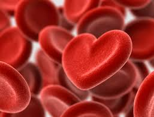

<!--
  Generated template for the Profiluser page.

  See http://ionicframework.com/docs/components/#navigation for more info on
  Ionic pages and navigation.
-->
<ion-header>

    <ion-navbar>
        <ion-title>{{pseudo}}</ion-title>
    </ion-navbar>

</ion-header>


<ion-content>
    <div class="profile-card">
        
        <div class="profile-name">{{selectedUser.pseudo}}</div>
    </div>
    <ion-list padding>
        <ion-item>
            <b> Email</b>: {{selectedUser.email}}
        </ion-item>
        <ion-item>
            <b> Sexe</b>: {{selectedUser.sexe}}
        </ion-item>
        <ion-item>
            <b>Age</b>: {{selectedUser.age}} ans
        </ion-item>
        <button ion-button block *ngIf="selectedUser.id!=user.id" (click)="chat(selectedUser.id)">Discuter</button>
    </ion-list>

</ion-content>